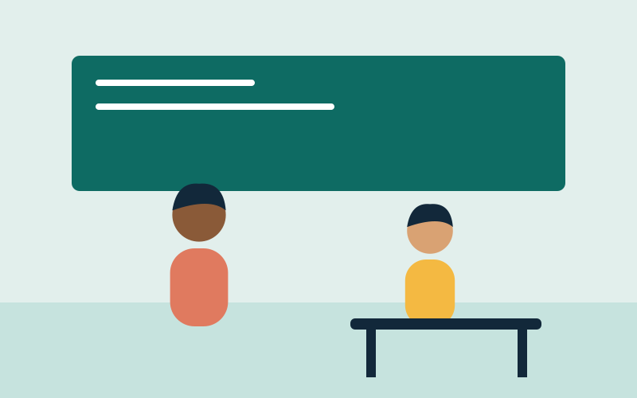

Notice
Look for changes: frequent absences, falling grades, sudden anger or withdrawal, tiredness, or signs of bullying. See Signs to look for.
Respond
- Talk privately and calmly. Start with what you noticed, not what you think is wrong.
- Listen first. Avoid promising to keep everything secret if safety is at risk.
- Refer to your guidance counselor or school mental health office. Use Find help when the school has no counselor.
- If a learner may be in danger, stay with them and call 911 or a crisis line.
Build a safe classroom
- Set clear rules against bullying and teasing, including about gender, disability, and language.
- Offer more than one way to take part: speaking, writing, or small groups.
- Use the short calming videos before a test or after a hard moment.

Schools in the Philippines now have a legal duty to promote mental health. Read the plain-language summary on Laws and school support.
KalingaPH shares general information. It does not diagnose or replace care from a licensed professional.